아래 옷장은 변경 전 원본 그대로입니다. 위치 표시는 교체 계획이며, 교체 후 합성 결과는 아직 생성하지 않았습니다.
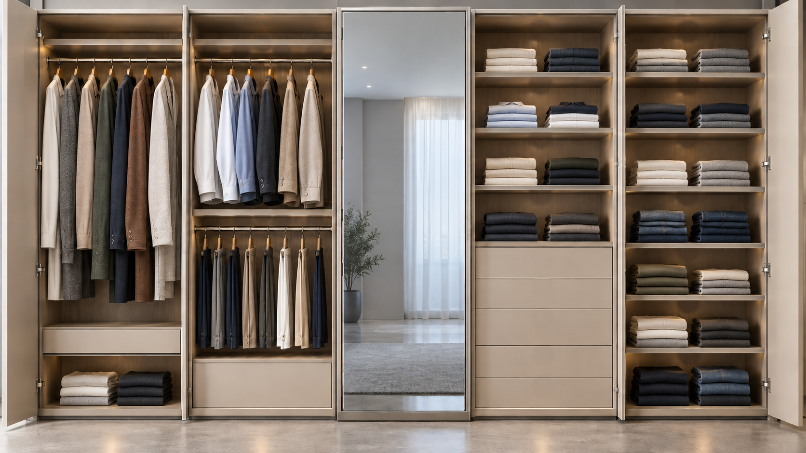
원본 옷걸이 각도·중첩·간격·옷자락 길이를 각 위치의 틀로 사용합니다. 오른쪽 E 4단 / F 7단은 선반마다 좌우 2묶음 × 3벌. 93벌은 원본의 시각적 자리 수이며 실제 적재 수량이 아닙니다.
B3 점등은 보고서의 CSS 연출안으로 실제 LED/센서 연결을 검증한 결과가 아닙니다. 상품 후보는 아래 33개이며 선반 전체 72벌의 개별 상품 배정은 미확정입니다.
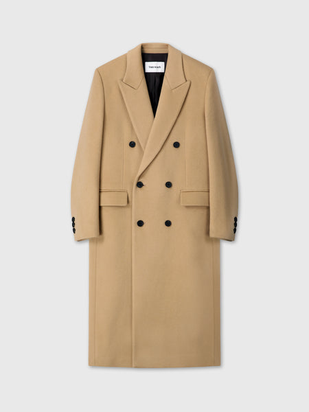
(W) WOOL TAILORED DOUBLE-BREASTED MAXI COAT_ CAMEL
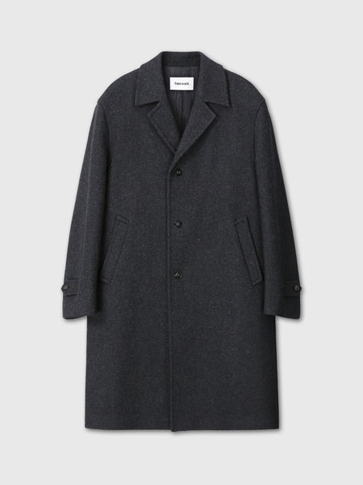
FELTED WOOL TAILORED COAT_ CHARCOAL
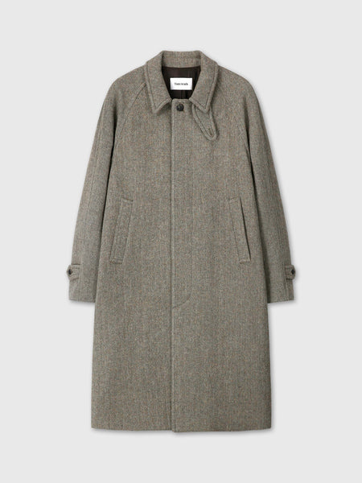
HERRINGBONE WOOL RAGLAN OVERCOAT_ PATINA TAUPE
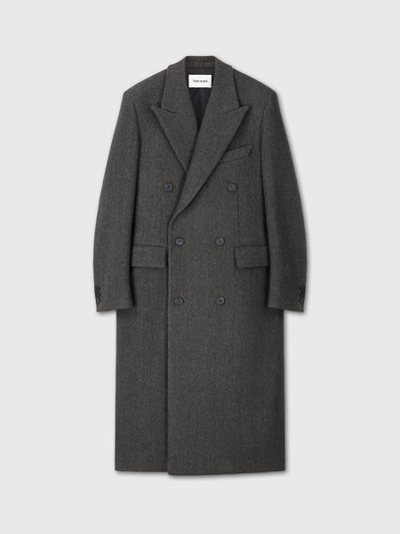
HERRINGBONE WOOL DOUBLE-BREASTED COAT_ MOSS BROWN
WOOL AND CASHMERE DOUBLE-BREASTED COAT_ BLACK
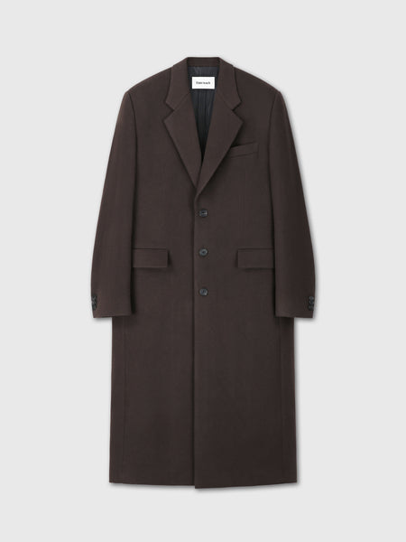
WOOL AND CASHMERE TAILORED COAT_ DEEP BROWN
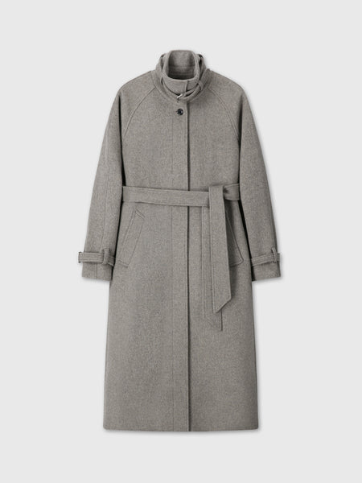
(W) HIGH-NECK BELTED WOOL COAT_ HEATHER GREY
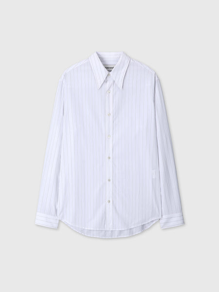
HIGH DENSITY STRIPED COTTON SHIRT_ WHITE
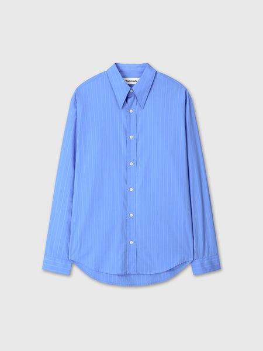
HIGH DENSITY STRIPED COTTON SHIRT_ SKY COBALT
DENIM WESTERN SHIRT_ VINTAGE INDIGO
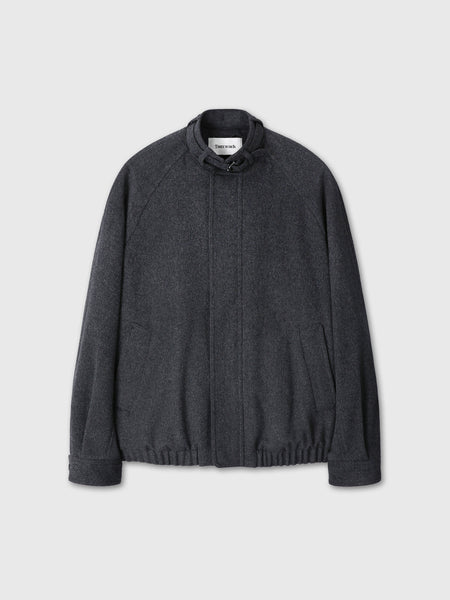
WOOL FLANNEL BELTED STAND COLLAR BOMBER_ CHARCOAL ANTHRACITE
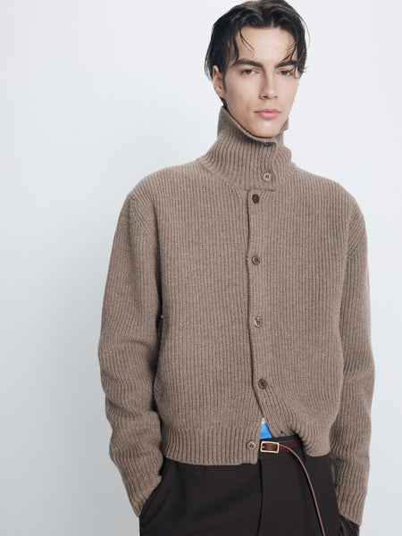
HIGH NECK MERINO WOOL BUTTON-UP KNITTED BLOUSON_ TAUPE
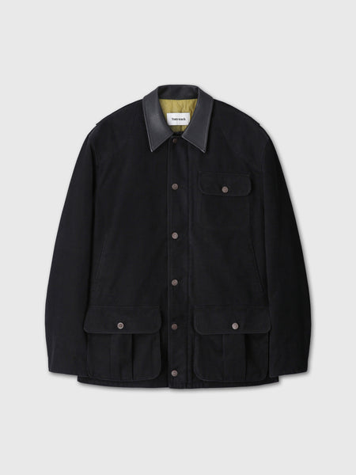
LEATHER COLLAR PADDED HUNTING JACKET_ BLACK
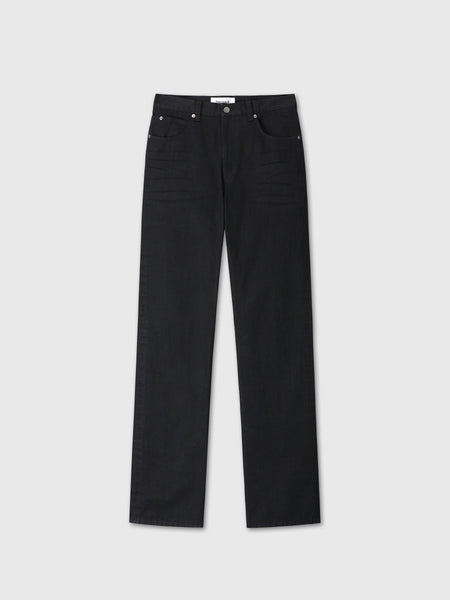
SLIM-STRAIGHT DENIM JEANS_ RINSED BLACK
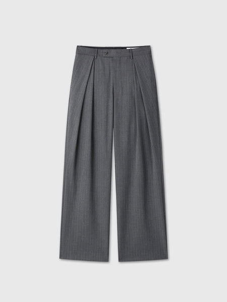
CROSS TUCK WIDE TROUSERS_ GREY PINSTRIPE
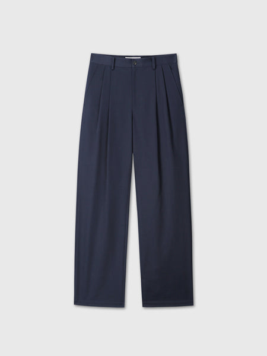
COTTON DRILL PLEATED CHINO PANTS_ NAVY
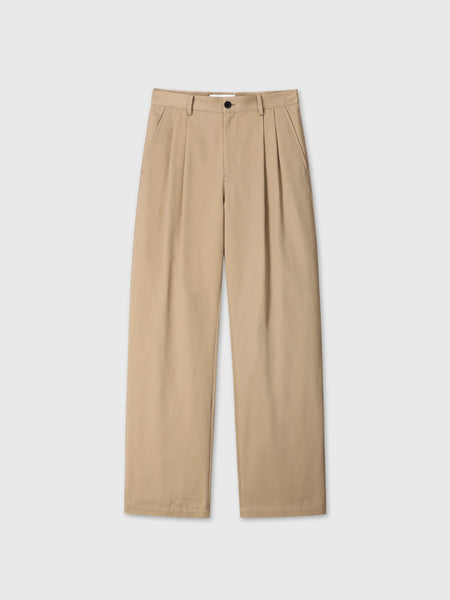
COTTON DRILL PLEATED CHINO PANTS_ BEIGE
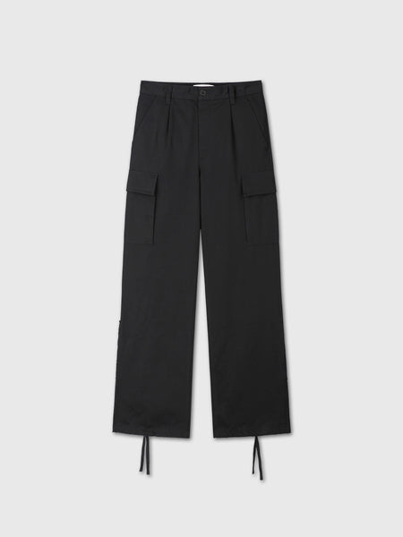
RE-CUT WIDE LEG CARGO PANTS_ BLACK
LOOSE STRAIGHT BUCKLE-BACK JEANS_ ECRU
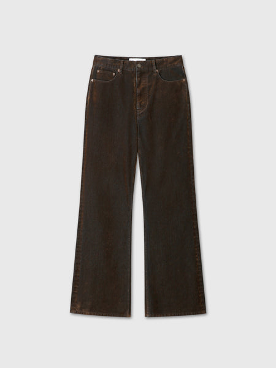
FLOCKED DENIM LOOSE FLARED PANTS_ BROWN
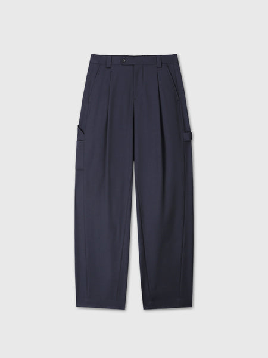
WOOL CARPENTER TROUSERS_ NAVY
MERINO WOOL HALF-ZIP JUMPER_ SAND
MERINO WOOL HALF-ZIP JUMPER_ NAVY
SUPER FINE MERINO WOOL CREW-NECK KNIT_ CHARCOAL
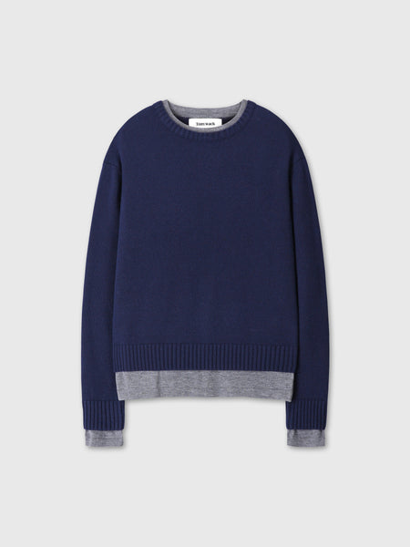
WOOL AND CASHMERE LAYERED KNIT_ NAVY/GREY
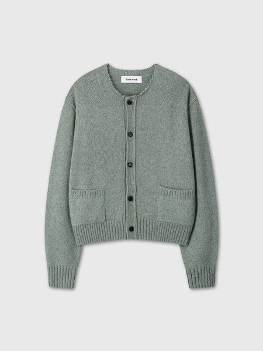
SHETLAND WOOL RAW CARDIGAN_ SAGE GREEN
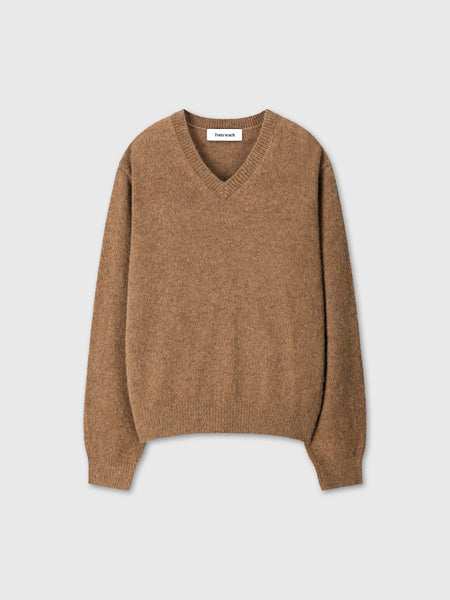
BRUSHED SHAGGY DOG V-NECK KNIT_ CAMEL
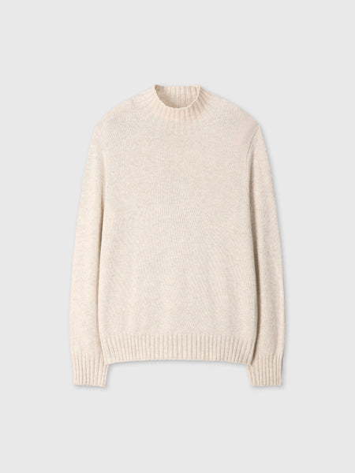
(W) WOOL BLEND OVERSIEZED TURTLENECK_ ECRU/BEIGE
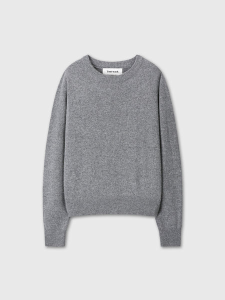
(W) WOOL BLEND CREW-NECK KNIT_ GREY
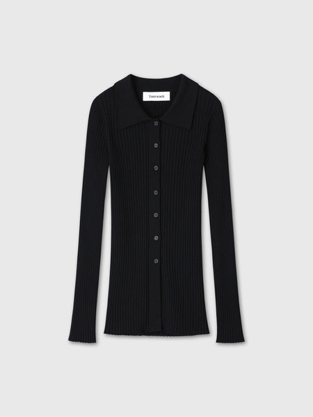
(W) SUPERFINE MERINO WOOL RIB CARDIGAN_ BLACK
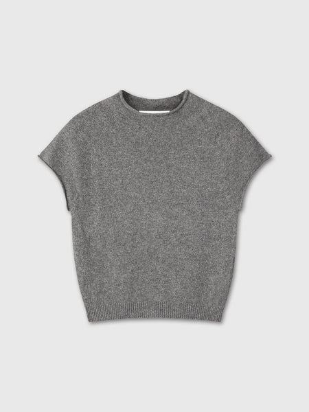
(W) SUPERFINE WOOL CROPPED SWEATER_ WARM GREY
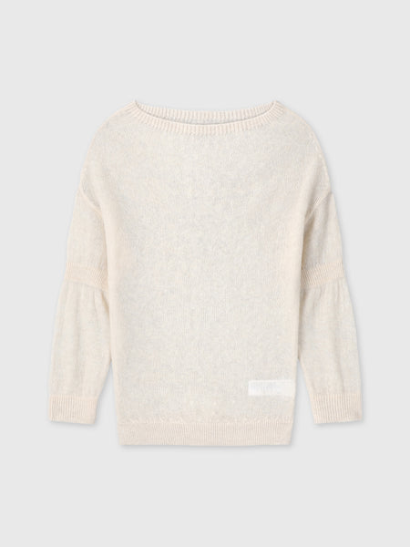
(W) CONVERTIBLE RIB-BAND KNIT TOP_ IVORY
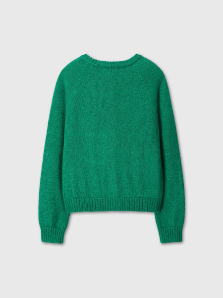
(W) MOHAIR BLEND RAGLAN CARDIGAN_ GREEN